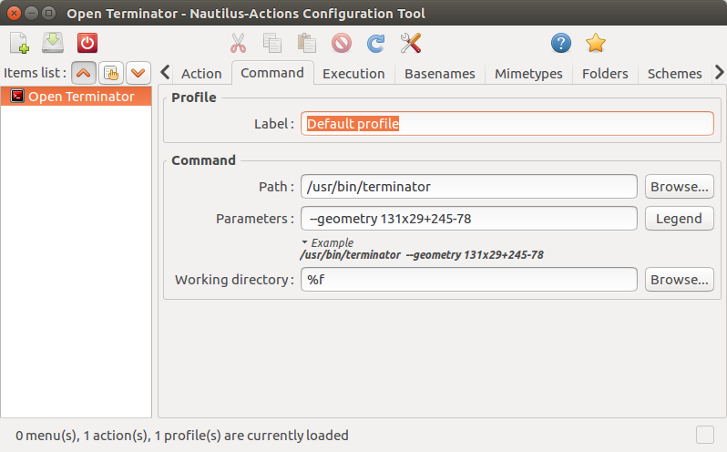
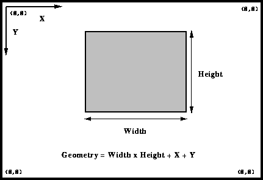
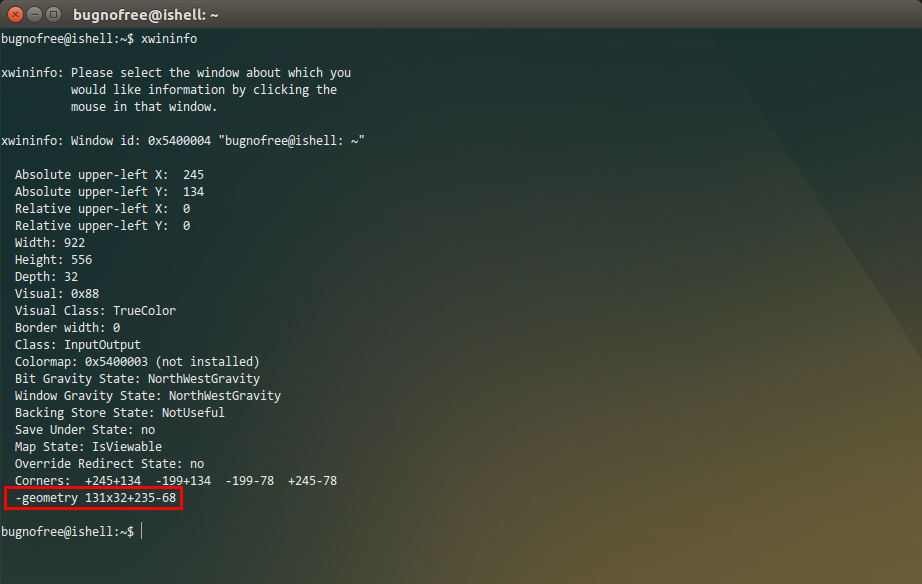
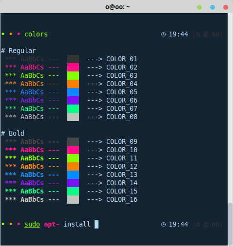
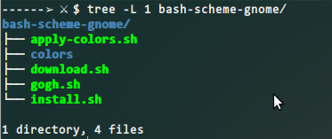
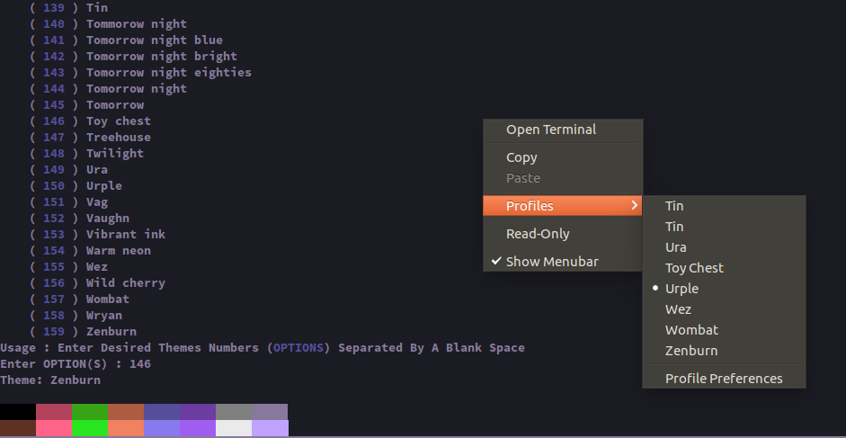
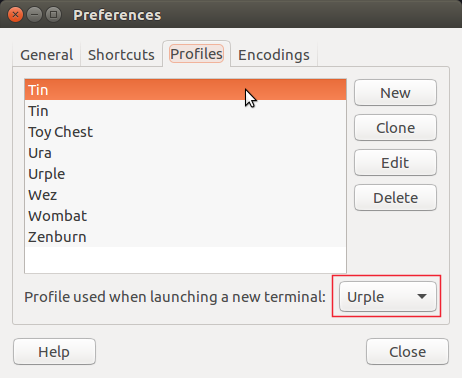

系统升级到Ubuntu 16.04了,以后打算使用16.04了. Ubuntu 16.04自身打开终端添加到了鼠标右键中,apt源里面因此移除了nautilus-open-terminal, 但是我仍然希望右键打开 termintor 这个终端,新的设置方法仍是通过 nautilus-admin,首先安装:
sudo apt-get install -y nautilus-admin && nautilus -q安装后打开,以前设置 nautilus-actions 时,无法在文件目录下打开,总是在当前目录的上一层打开, 这让我很郁闷,前天仔细读了读 nautilus-actions 的手册,说实话英文看着有的地方理解不到位的话, 很难做成功,最后得知是通过 %f 参数完成对应的功能,设置如下图1: 
其他地方地方请参看早些时候的文章.这里主要是将 Working directory 为 %f .
通常的,我们希望终端在打开后在屏幕比较中心的位置打开,那么怎么设置呢,通过termintor的帮助手册, 我们可以看到有一个参数 --geometry=GEOMETRY , 有了这个参数就好办多了. 我们只需要设置 GEOMETRY 的值为靠近屏幕中心的位置,并在 termintor 启动时指定该参数.
GEOMETRY 这个参数是怎样用的呢,一番搜索之后,我在 这里 找到了一个描述,如下图2,所示: 
首先将你的终端移动到你认为比较中心的位置,打开命令行输入 xwininfo, 用鼠标单击终端,就会显示如下图3的信息: 
红框里面的信息就是我们所需要的,然后安装一个工具 sudo apt install alacarte , 打开该工具,依次 System Tools / Terminator ,然后在属性里面输入: terminator --geometry 131x29+245-78即可.
更方便的让termintor启动后保持在屏幕指定位置.
在一些尝试之后,我发现写一个小脚本能够更好的控制,termintor安装后, 会在/usr/bin/下面创建一个链接,叫做termintor,我们可以将其保存为terminator-ori, 然后写一个叫做terminator的脚本放在/usr/bin/目录下面:
#! /bin/bash /usr/bin/terminator-ori --geometry 131x29+245-78然后chmod +x termintor加上执行权限即可.基本的思路还是 偷梁换柱.
通常我们打开一个终端,希望会对TAB的名字进行重命名,对于terminator,可以在~/.bashrc中 加入一个bash函数如下:
#命令行设置终端TAB名称,用法:tab your_tabname
#ref:http://stackoverflow.com/questions/5343265/setting-title-for-tabs-in-terminator-console-application-in-ubuntu
# Another good reference about bash colors found here:
# https://misc.flogisoft.com/bash/tip_colors_and_formatting
# I will not use this method to set up terminator title since they
# will mess up long commands
tab()
{
# 有一个参数,表示设置标题,如果 tab ishell 将标题设置为 ishell
ORIG=$PS1
if [[ $# -eq 1 ]];then
TITLE="\e]2;$*\a"
PS1=${ORIG}${TITLE}
# 其他情况(无参数),表示将当前基准目录设置为标题
else
bn=`basename $(pwd)`
TITLE="\e]2;$bn\a"
PS1=${ORIG}${TITLE}
fi
}
然后source ~/.bashrc,这时就可以用tab your_tabname来将当前tab重命名为your_tabname了.
但是这种方法有一个弊端,就是如果命令行过长,那么命令行将会自己覆盖自己,看着很不舒服,
目前我已经放弃了这种方法.留在此处仅供参考.
Github 上有一个开源项目 Gogh , 提供了 gnome terminal 的各种颜色主题:
项目很不错,但是安装都是在线安装,这里我将其打包成一个 离线安装包 了. 该安装包如下所示:
其中 download.sh 和 install.sh 是我写的两个用于下载以及安装 gogh 颜色主题的 bash 脚本, download.sh 会将所有的 gogh 主题下载到 colors 目录,离线包的 colors 中已经离线好了主题颜色, 你只需要执行 install.sh 即可. install.sh 支持安装到自定义目录, 默认安装目录是 /opt/bash-scheme ,如果想安装到自定义目录,可以传入一个参数.
安装完成后,打开终端,执行 gogh 命令即可,然后选择对应的颜色编号,如下所示:
然后设置完成后,鼠标右键就可以在 Profiles 中选择自己喜欢的颜色主题. 如果想设置默认的主题,打开 gnome-terminal 的 Preferiences 设置默认主题,如下:
apt-get install nautilus-open-terminal备份原有的shell:
mv /usr/bin/gnome-terminal /usr/bin/gnome-terminal-bak创建terminator软链接,名字为gnome-terminal
ln -s /usr/bin/terminator /usr/bin/gnome-terminal然后nautilus -q退出.
root@user:/usr/bin# ls -l *term* lrwxrwxrwx 1 root root 19 Apr 14 04:27 gnome-terminal -> /usr/bin/terminator -rwxr-xr-x 1 root root 301520 Dec 15 2013 gnome-terminal-bak lrwxrwxrwx 1 root root 30 Aug 7 2014 terminator -> ../share/terminator/terminator

| 文本及其背景色 | |||||||||||||||
|---|---|---|---|---|---|---|---|---|---|---|---|---|---|---|---|
| 文本色(#E8E8E8) | |||||||||||||||
| 背景色(#2D5F5F) | |||||||||||||||
| 着色模板(顺序与上图是一样的) | |||||||||||||||
| (#000000) | (#5A8E1C) | (#2D5F5F) | (#CDCD00) | (#1E90FF) | (#CD00CD) | (#00CDCD) | (#E5E5E5) | (#4C4C4C) | (#868E09) | (#00FF00) | (#FFFF00) | (#4682B4) | (#FF00FF) | (#00FFFF) | (#FFFFFF) |
eval
$(
echo "no:global default;fi:normal file;di:directory;ln:symbolic link;pi:named pipe;so:socket;do:door;bd:block device;
cd:character device;or:orphan symlink;mi:missing file;su:set uid;sg:set gid;tw:sticky other writable;
ow:other writable;st:sticky;ex:executable;"|sed -e 's/:/="/g; s/\;/"\n/g'
)
{
IFS=:
for i in $LS_COLORS
do
echo -e "\e[${i#*=}m$( x=${i%=*}; [ "${!x}" ] && echo "${!x}" || echo "$x" )\e[m"
done
}
运行后如下所示:本配置文件最近一次更新时间:2017-02-23 Thu 02:58 pm
[global_config] enabled_plugins = CustomCommandsMenu, LaunchpadCodeURLHandler, APTURLHandler, LaunchpadBugURLHandler handle_size = -3 inactive_color_offset = 0.83 suppress_multiple_term_dialog = True title_font = YaHei Consolas Hybrid Bold 10 title_hide_sizetext = True title_inactive_bg_color = "#656566" title_inactive_fg_color = "#e9c8c8" title_transmit_bg_color = "#000000" title_transmit_fg_color = "#36f317" title_use_system_font = False [keybindings] next_tab =由于Terminator默认不会集成到鼠标右键,这很不方便,好的下面来将其集成到鼠标右键.Right prev_tab = Left [layouts] [[default]] [[[child1]]] parent = window0 profile = default type = Terminal [[[window0]]] parent = "" size = 925, 570 type = Window [plugins] [profiles] [[default]] background_color = "#2d5f5f" background_image = /home/bugnofree/Pictures/shellbg.jpg background_type = image copy_on_selection = True cursor_shape = ibeam font = YaHei Consolas Hybrid 10 foreground_color = "#e8e8e8" palette = "#000000:#5a8e1c:#2d5f5f:#cdcd00:#1e90ff:#cd00cd:#00cdcd:#e5e5e5:#4c4c4c:#868e09:#00ff00:#ffff00:#4682b4:#ff00ff:#00ffff:#ffffff" scroll_background = False scrollback_infinite = True scrollback_lines = 3000 use_system_font = False